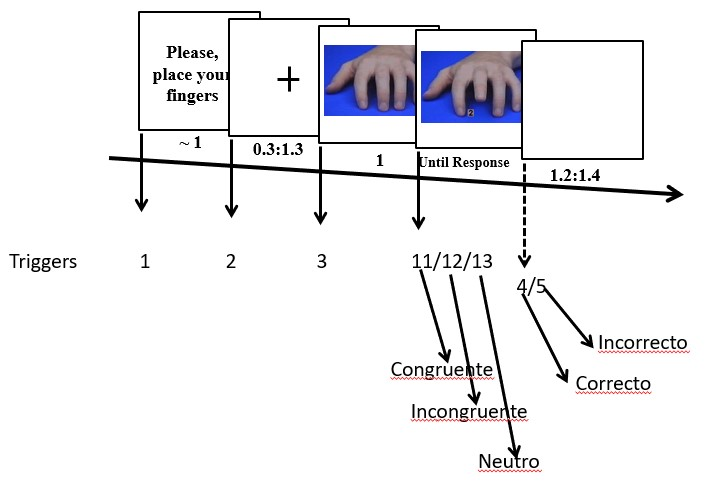
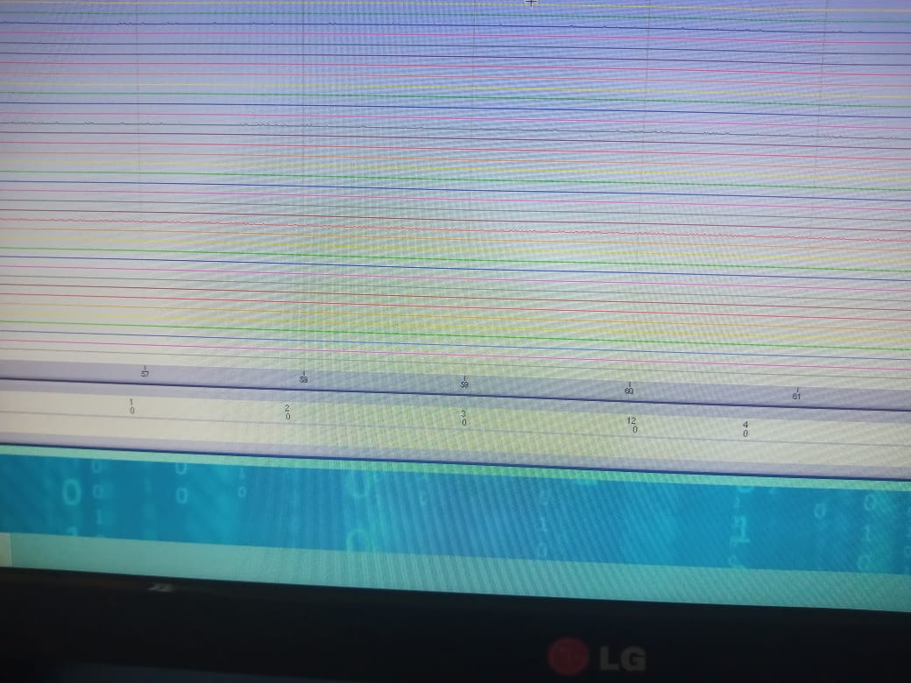
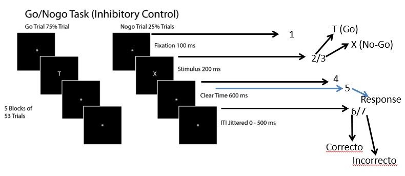
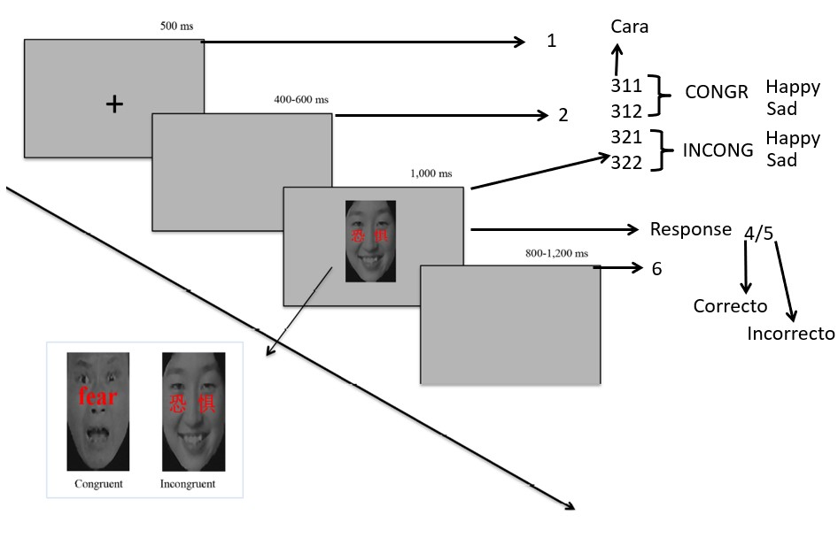
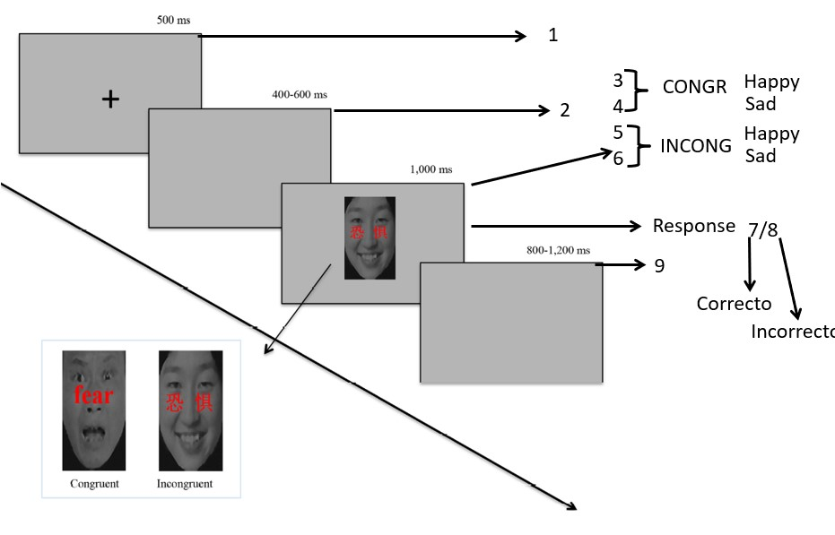
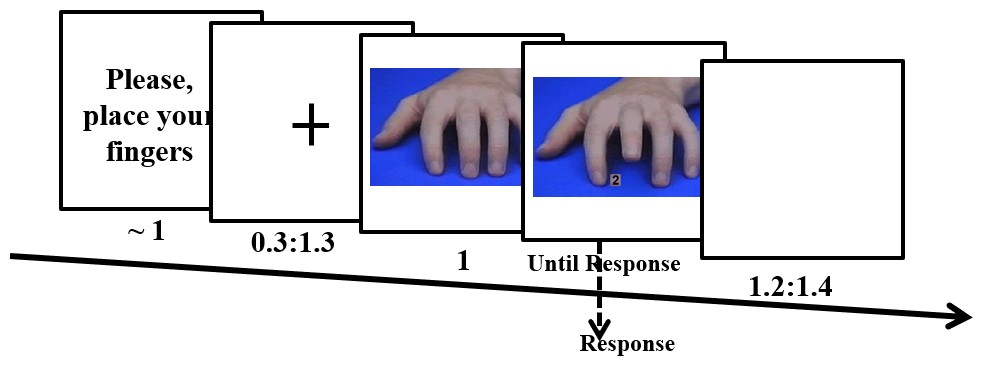
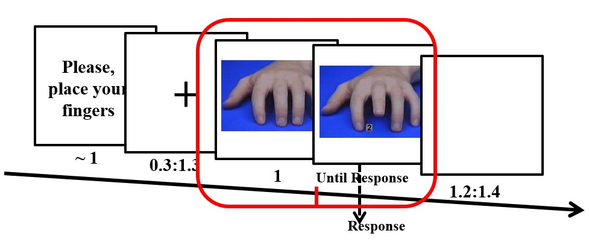
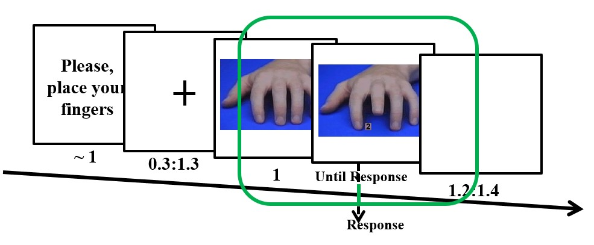

Capítulo 2 Preprocesamiento del EEG
2.1 ¿Qué es?
El preprocesamiento comprende las transformaciones y reorganizaciones que hacemos de los datos crudos.
- Algunas operaciones organizan los datos: recortar épocas alrededor de un evento.
- Otras eliminan datos contaminados: rechazar ensayos o retirar electrodos defectuosos.
- Otras transforman la señal: filtrar, cambiar la referencia o retirar componentes mediante ICA.
No hay una receta única. Las decisiones dependen del experimento, del equipo y de los análisis que queremos realizar.
- Debes aplicar los mismos procedimientos a las distintas condiciones. Evita que haya diferencias introducidas por el procesamiento!
- Registra las decisiones que hiciste para cada parte de tu pre-procesamiento (ensayos rechazados, electrodos interpolados y componentes retirados). Esto te permmite reproducir tu análisis.
2.2 Antes de registrar
Un buen análisis no compensa un experimento mal diseñado.
- Discute el diseño y pide a otras personas que realicen la tarea.
- Pilotea tu tarea y chequea los resultados conductuales. Comprueba que la tarea funciona como se espera.
- Registra EEG de 1 o 2 participantes y realiza un análisis completo, testeando las hipótesis principales.
- Corrige los problemas antes de comenzar la recolección definitiva.
2.2.1 Triggers
Los marcadores o triggers indican cuándo ocurrió cada evento y permiten relacionarlo con el EEG.
- Deben permitir identificar estímulos, condiciones y respuestas.
- Es más fácil agrupar códigos durante el análisis que reconstruir información que nunca se registró.
- Hay que comprobar que los códigos y sus tiempos se recuperan correctamente del archivo EEG.
- Un marcador demasiado breve puede no ser detectado por el sistema.
- Marcadores demasiado largos o simultáneos pueden superponerse y perderse.
Sin marcadores correctos, podemos alinear la señal al evento equivocado o asignar ensayos a condiciones incorrectas.
Tarea de imitación-inhibición (esquema de triggers)

Tarea de imitación-inhibición (triggers en el registro)

Tarea Go/No-Go (esquema de triggers)

Tarea de Stroop emocional (esquema de triggers, versión 1)

Tarea de Stroop emocional (esquema de triggers, versión 2)

2.2.2 Tiempos del experimento
Hay que considerar que la respuesta cerebral a un evento puede continuar después de que el estímulo termine
El análisis TF utiliza un intervalo de señal alrededor de cada instante para estimar la actividad. Por eso, una respuesta breve puede aparecer más extendida en el tiempo y resulta más difícil precisar cuándo comienza y termina.
Si los eventos están muy próximos, sus respuestas pueden superponerse.
Conviene pilotear con intervalos amplios cuando no sabemos cuánto dura la respuesta de interés.
El intervalo entre ensayos debe considerar la línea base y las frecuencias que se analizarán.
- En TF, el suavizado puede extender actividad posterior al estímulo hacia el período previo.
- Es bueno separar la línea base del inicio del estímulo. Ej: usar −500 a −200 ms.
Tarea de imitación-inhibición

- Los intervalos fijos y variables tienen consecuencias:
- Intervalos fijos: permiten anticipar el siguiente ensayo y prepararse.
- Intervalos variables: también generan expectativas temporales, que cambian según cuánto se ha esperado.
2.2.3 Ensayos, electrodos y muestreo
- Número de ensayos: depende de la relación señal/ruido, el tamaño del efecto y el análisis.
- Se ha propuesto que alrededor de 50 ensayos por condición y participante está OK.
- Número de electrodos: depende de las inferencias que queremos hacer.
- Una medición ERP localizada requiere menos cobertura que una reconstrucción de fuentes.
- Tener al menos 64 electrodos cuando sea posible es un buen compromiso.
- Frecuencia de muestreo: debe permitir representar las frecuencias de interés.
- Solo pueden recuperarse frecuencias por debajo de la mitad de la frecuencia de muestreo.
- En la práctica, se recomienda muestrear por encima de ese mínimo, especialmente para estimar fase.
- Para muchos análisis un rango útil es 500–2000 Hz (más alto > mayor tamaño de los archivos y tiempo de procesamiento).
2.3 Epoquear
Una época es un segmento del EEG continuo recortado alrededor de un evento.
- Antes de segmentar: datos organizados por electrodo × tiempo.
- Después de segmentar: datos organizados por electrodo × tiempo × ensayo.
2.3.1 El tiempo 0
- Puede ser el inicio del estímulo, una respuesta u otro evento de interés.
- La elección debe corresponder a la pregunta que queremos responder.
- Si interesa tanto el estímulo como la respuesta, deben conservarse ambos eventos y suficiente señal alrededor de ellos.
- Los datos pueden realinearse durante el análisis si esos eventos y períodos están incluidos en las épocas.
Tarea de imitación-inhibición (epoqueado al comienzo del estímulo)

Tarea de imitación-inhibición (epoqueado al comienzo de la respuesta)

En reposo no es necesario alinear los datos a estímulos, pero se pueden dividir en segmentos de varios segundos para facilitar el análisis.
2.3.2 Efectos de borde
Para TF necesitamos más señal que la ventana que finalmente queremos interpretar.
- Los extremos de una época introducen discontinuidades que pueden generar efectos de borde al aplicar filtros o descomposición TF.
- Por eso se incluyen márgenes temporales antes y después del período de interés.
- Esos márgenes se descartan después de la descomposición.
- Las frecuencias bajas requieren márgenes más largos.
Ejemplos:
- Para analizar de 0 a 1000 ms, se podrían extraer épocas de −1500 a +2500 ms.
- Una formula es usar 3 ciclos de la frecuencia más baja como orientación inicial: a 2 Hz, tres ciclos duran 1500 ms.
- El margen necesario depende del método y de la magnitud de las discontinuidades; hay que revisar los resultados.
2.4 Número de ensayos
Una diferencia en el número de ensayos (trials) puede afectar las estimaciones y su comparabilidad.
- Las medidas basadas en fase son especialmente sensibles: pocos ensayos pueden introducir un sesgo positivo.
- En los ERPs, pocos ensayos reducen la relación señal/ruido y aumentan la influencia de valores extremos.
- Diferencias pequeñas, como 84 frente a 87 ensayos, no plantean el mismo problema que 84 frente a 23.
2.5 Filtros temporal
Los filtros atenúan determinados rangos de frecuencia y modifican la señal.
| Filtro | ¿Qué atenúa? |
|---|---|
| High-pass | Fluctuaciones lentas por debajo del rango que se conserva. |
| Low-pass | Actividad rápida por encima del rango que se conserva. |
| Notch | Una banda estrecha, por ejemplo alrededor de 50 o 60 Hz. |
- La elección depende de las frecuencias y procesos que queremos estudiar.
- Se ha propuesto un high-pass de 0.1 o 0.5 Hz para reducir derivas lentas, aplicados sobre datos continuos.
- Aplicarlos a épocas cortas puede introducir efectos de borde que ocupen gran parte de la época.
- Muchos métodos TF ya realizan un filtrado por frecuencias.
- Si solo extraeremos actividad entre 2 y 20 Hz, un low-pass previo a 40 Hz no es necesario.
Filtrar más no significa limpiar mejor. Un filtro puede eliminar actividad de interés, reducir la precisión temporal o introducir oscilaciones artificiales.
2.6 Rechazo de artefactos
Se eliminan ensayos cuya contaminación impide utilizarlos adecuadamente en el análisis.
- Algunos rechazos son claros; otros dependen del balance entre conservar señal y reducir ruido.
- Hay dos enfoques principales:
- Inspección visual: permite examinar patrones que un criterio automático podría pasar por alto, pero depende del juicio del investigador.
- Rechazo automático: es rápido y reproducible, pero puede descartar ensayos válidos o conservar artefactos si los criterios no se ajustan a los datos.
- Cohen expresa su preferencia por la inspección visual; no la presenta como una solución universal.
En TF, las discontinuidades bruscas merecen especial atención: incluso un salto pequeño puede producir efectos importantes al descomponer la señal.
2.7 Referencia
Todos los voltajes EEG se expresan respecto de una referencia.
- La actividad presente en la referencia se refleja en los otros canales.
- Una referencia ruidosa puede contaminar todo el registro.
- Entre las opciones existe: promedio de mastoides, el promedio de lóbulos de las orejas y la referencia promedio.
- Ninguna referencia es eléctricamente neutra ni adecuada para todas las preguntas.
2.7.1 ¿Qué considerar?
- El número y la distribución de electrodos.
- Los análisis y la localización esperada de los efectos.
- Evitar que la referencia esté cerca del efecto principal: por ejemplo, Cz puede ser una mala elección si interesa una respuesta máxima en Cz o FCz.
- Una referencia unilateral puede introducir asimetrías en los datos.
La referencia puede cambiarse después del registro. Aun así, hay que conocer cuál se utilizó durante la adquisición y comprobar su calidad.
2.8 Electrodos defectuosos
Interpolar consiste en estimar la señal de un electrodo a partir de otros electrodos y sus posiciones.
- Puede ser necesario cuando un canal está plano o registra principalmente ruido.
- Antes de interpolar, hay que comprobar si contiene señal cerebral recuperable.
- Si el problema se detecta durante el registro, es preferible corregirlo en ese momento.
2.8.1 ¿Qué limitación tiene?
- La señal interpolada es una estimación derivada de otros canales.
- No aporta información independiente y no recupera exactamente lo que habría registrado el electrodo.
- La interpolación introduce dependencias entre canales y puede afectar análisis que requieren una matriz de rango completo.
Un electrodo defectuoso no debe entrar sin revisión en operaciones que combinan canales, como la referencia promedio o ciertos filtros espaciales: su ruido puede propagarse a los demás.
2.9 Filtrado espacial
Combina información de distintos electrodos para modificar cómo se representa espacialmente la actividad.
Cohen distingue tres objetivos:
Ayudar a localizar un resultado. Por ejemplo, evaluar si una respuesta es compatible con una fuente motora.
Separar patrones que se superponen en el cuero cabelludo. Por ejemplo, respuestas occipitales y parietales.
Reducir efectos de conducción de volumen en algunos análisis de conectividad. Una misma fuente puede contribuir a varios electrodos y generar asociaciones que no reflejan interacción entre fuentes diferentes.
Entre los métodos discutidos están el Laplaciano de superficie y la reconstrucción de fuentes.
No todos los filtros espaciales resuelven los mismos problemas ni se aplican en la misma etapa.
Por ejemplo, el Laplaciano utilizado antes de estimar conectividad se aplica a la señal temporal de los ensayos, antes de la descomposición TF.
2.10 Artefactos e ICA
ICA es una técnica que descompone la señal en componentes intentando separar fuentes estadísticamente independientes.
- Cada componente es una combinación ponderada de los electrodos.
- Puede utilizarse para identificar componentes dominados por artefactos y retirar su contribución de los datos.
- También puede utilizarse para analizar directamente la actividad de los componentes.
2.10.1 ¿Cómo identificar un componente artefactual?
Se consideran conjuntamente:
- Topografía: cómo se distribuyen sus pesos entre electrodos.
- Curso temporal: cuándo aparecen sus variaciones y qué forma tienen.
- Espectro: en qué frecuencias se concentra su actividad.
Por ejemplo, un componente de parpadeo suele mostrar una distribución anterior y deflexiones grandes y breves en el tiempo.
2.10.2 Limitaciones
- ICA se basa en propiedades estadísticas: no sabe qué es señal cerebral y qué es ruido.
- Un componente puede contener ambos.
- La ausencia de un ERP en un componente no demuestra que carezca de señal cerebral: podría contener actividad no ligada a la fase.
- Cohen propone retirar componentes solo cuando existe evidencia convincente de artefacto y poca o ninguna señal de interés.
Eliminar componentes de forma indiscriminada puede eliminar actividad cerebral.
2.11 Parpadeos
Corregir el artefacto eléctrico no garantiza que el ensayo sea válido para la pregunta experimental.
- El artefacto del parpadeo se superpone a la señal cerebral y puede atenuarse mediante ICA u otros métodos.
- Sin embargo, un parpadeo durante un estímulo visual breve puede impedir que la persona lo vea.
- Un cierre prolongado de los ojos también puede indicar fatiga o falta de atención.
- La decisión de conservar el ensayo debe considerar el momento y la duración del parpadeo.
2.11.1 ¿Pedir que no parpadeen?
- Suprimir activamente los parpadeos puede exigir esfuerzo y distraer de la tarea.
- Concentrarlos en el intervalo entre ensayos puede contaminar la línea base.
- Pedir que parpadeen siempre al responder puede hacer que el parpadeo y la actividad de respuesta estén ligados temporalmente, dificultando su separación mediante ICA.
2.12 Movimientos oculares
- Sacadas y microsacadas también pueden contaminar el EEG.
- Los electrodos EOG permiten detectar movimientos relativamente grandes; un sistema de seguimiento ocular ofrece mayor sensibilidad para movimientos pequeños.
- Estímulos centrales y una fijación visible pueden ayudar a reducir movimientos innecesarios, según la tarea.
- El impacto depende de la referencia, los electrodos y las frecuencias analizadas.
Si la tarea exige mantener la fijación, romperla puede invalidar un ensayo aunque se corrija el artefacto eléctrico.
2.13 Actividad muscular
El EMG puede aparecer en los canales EEG y confundirse con actividad cerebral rápida.
- Suele observarse como ráfagas rápidas, a menudo de gran amplitud y más marcadas cerca de cara, cuello y orejas.
- Es especialmente problemático para estudiar actividad beta y frecuencias superiores.
- Ráfagas intensas pueden acompañar movimientos, tos o tensión muscular y justificar el rechazo del ensayo.
- La contaminación continua exige valorar su distribución y los objetivos del análisis.
- Si se retira un componente muscular mediante ICA, hay que comprobar que no contenga también señal cerebral relevante.
2.14 Conducta y validez de los ensayos
Un ensayo puede tener una señal eléctrica limpia y, aun así, no representar el proceso que queremos estudiar.
Cohen llama a este problema ruido o artefactos cognitivos.
- Considerar separar respuestas correctas e incorrectas.
- Revisar omisiones, respuestas múltiples y tiempos de reacción inusualmente rápidos o lentos.
- Valorar ensayos posteriores a errores o pausas si introducen procesos ajenos a la pregunta.
- No excluir automáticamente una clase de ensayos: los errores o los cambios de regla pueden ser precisamente el fenómeno de interés.
Los criterios conductuales dependen de la tarea; no hay un único umbral de tiempo de reacción válido para todos los experimentos.
2.14.1 Errores parciales
- Una persona puede activar brevemente la mano incorrecta y después pulsar correctamente con la otra.
- El registro conductual indica acierto, pero el EMG permite detectar esa activación incorrecta.
- Esos ensayos pueden presentar respuestas cerebrales parecidas a las de los errores.
- Según la pregunta, pueden separarse o analizarse como una categoría propia.
2.15 Reducir artefactos durante el registro
La mejor forma de facilitar el preprocesamiento es comenzar con datos de buena calidad.
- Mostrar al participante su EEG en tiempo real.
- Pedirle que parpadee, tense la mandíbula o mueva los hombros para observar cómo cambia la señal.
- Explicar qué comportamientos producen artefactos y cómo reducirlos sin desatender la tarea.
- Vigilar la señal durante la adquisición.
- Si aparece un problema persistente, pausar cuando sea posible y corregir su causa.
- Comprobar comodidad, postura y fatiga.
El preprocesamiento puede mejorar datos buenos; no convierte cualquier registro deficiente en datos de buena calidad.
2.16 Primera revisión en el dominio temporal
Los ERPs y las representaciones temporales ayudan a comprobar la calidad de los datos, aunque el análisis principal sea TF.
- ERP por condición: alinear los ensayos y promediar el voltaje en cada instante.
- Butterfly plot: superponer los ERPs de todos los electrodos para detectar canales o patrones anómalos.
- Global field power: desviación estándar entre electrodos en cada instante; describe la dispersión espacial de los voltajes y no equivale al voltaje promedio.
- Topografías a lo largo del tiempo: revisar la distribución de las respuestas y detectar electrodos problemáticos.
- ERP image: mostrar los ensayos de un electrodo como filas, con el voltaje representado por colores; permite observar información que se pierde en el promedio.
2.16.1 Cuidado con el filtrado de ERPs
- Un pasa-bajos puede reducir fluctuaciones rápidas residuales y facilitar la inspección.
- También reduce precisión temporal y puede modificar componentes.
- Un filtro mal diseñado puede producir ondulaciones artificiales.
- Una curva más suave no es necesariamente una representación más fiel de los datos.
2.17 Qué debe quedar documentado
- Evento utilizado como tiempo cero, duración de las épocas y márgenes temporales.
- Filtros y parámetros aplicados.
- Referencia utilizada.
- Electrodos retirados o interpolados.
- Componentes retirados mediante ICA y criterios utilizados.
- Ensayos excluidos por artefactos o conducta.
- Cantidad final de ensayos por condición y cualquier procedimiento para igualarla.
Estas decisiones deben permitir reconstruir el resultado a partir de los datos originales.